FOTOS DO PROJETO
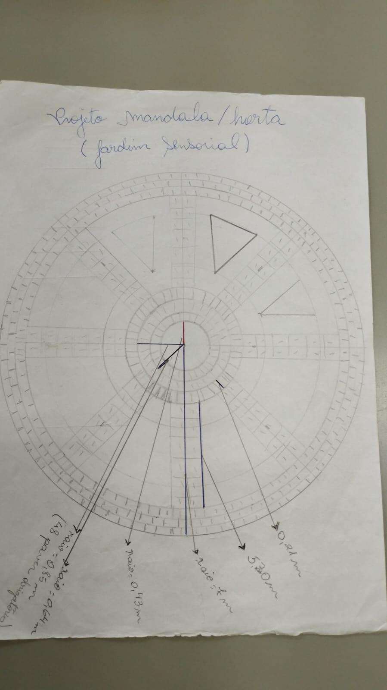 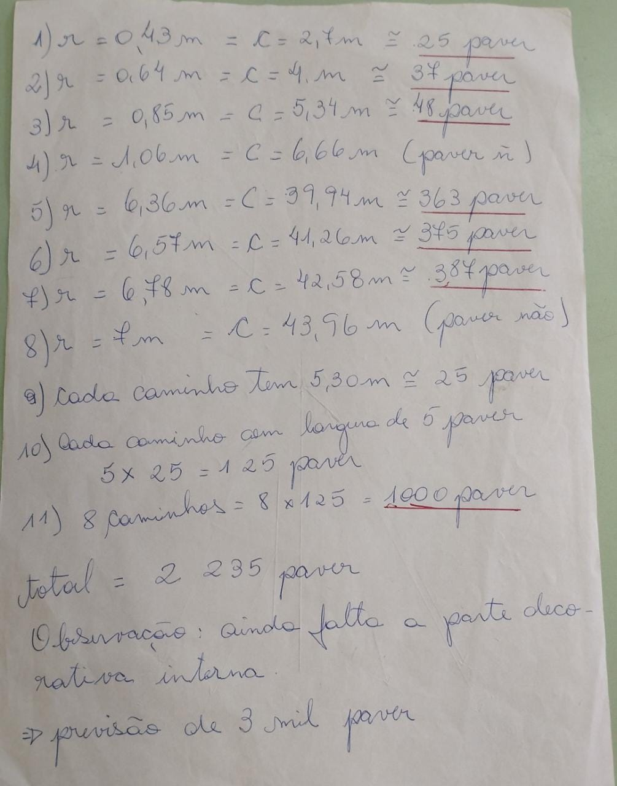 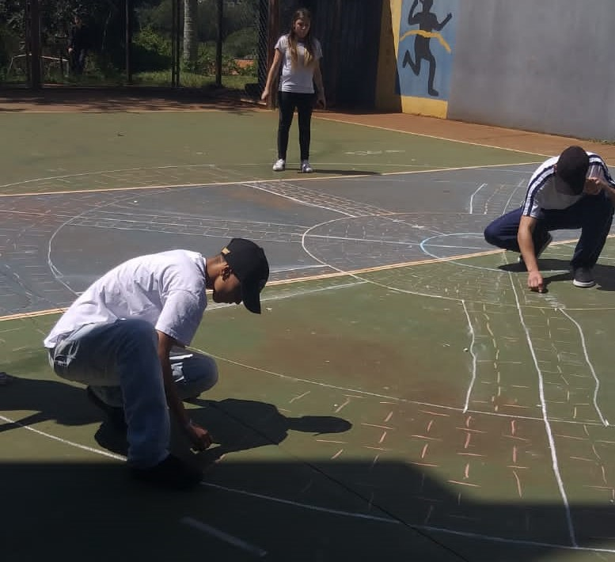 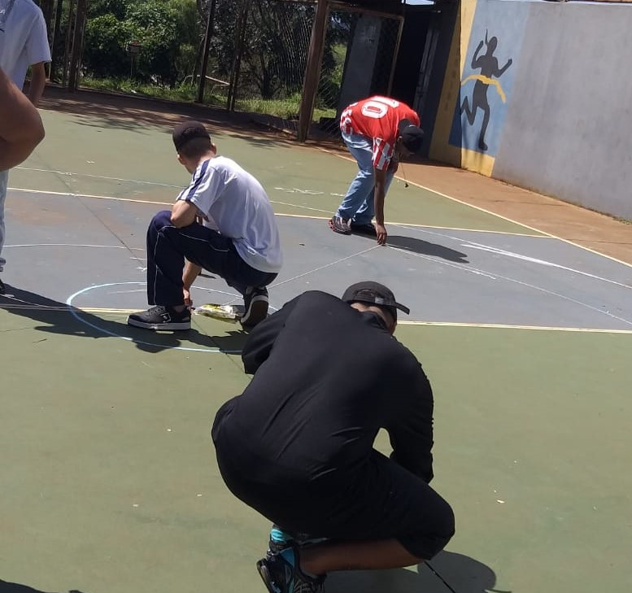 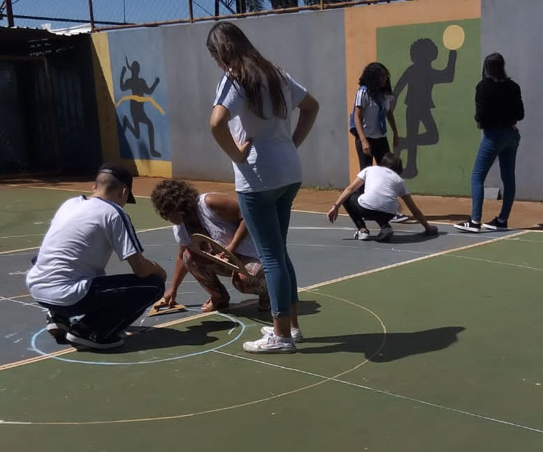 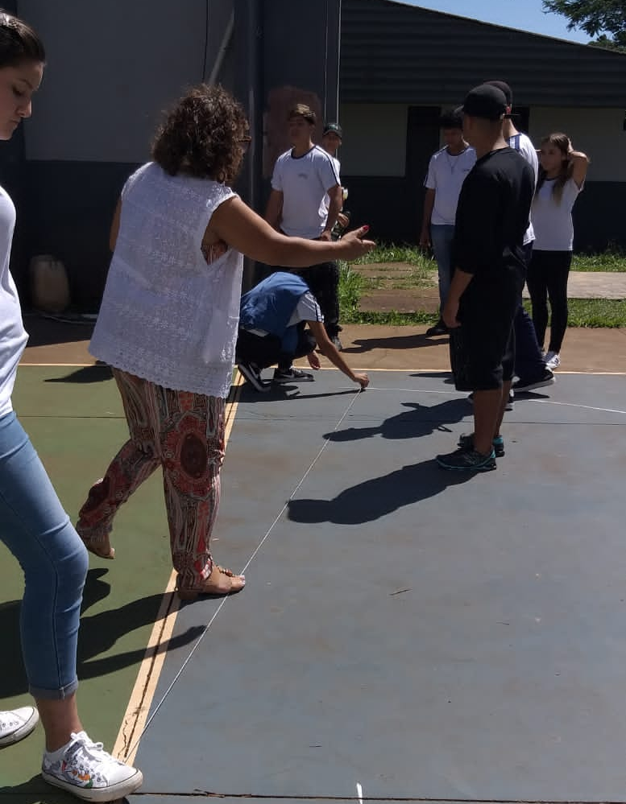
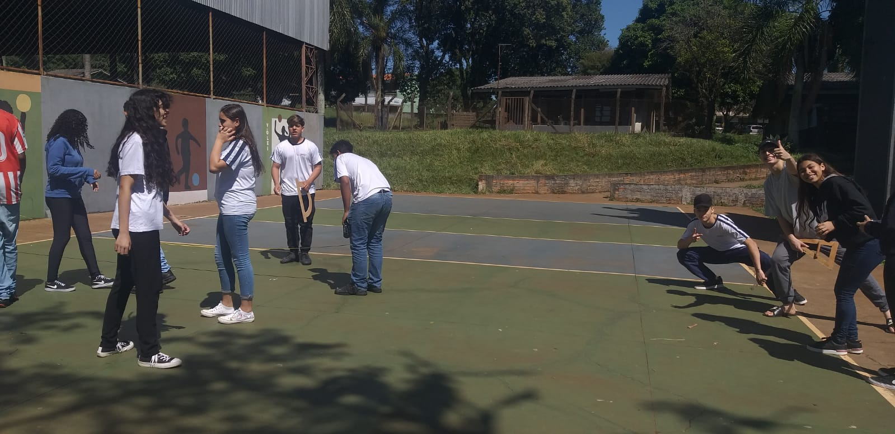
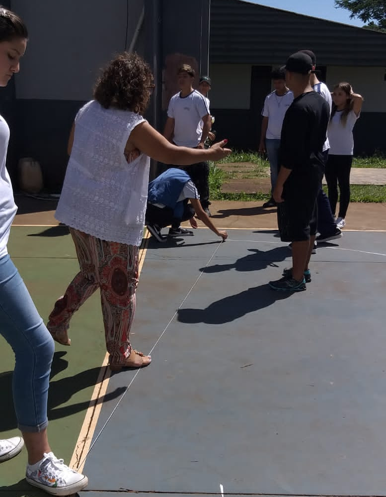
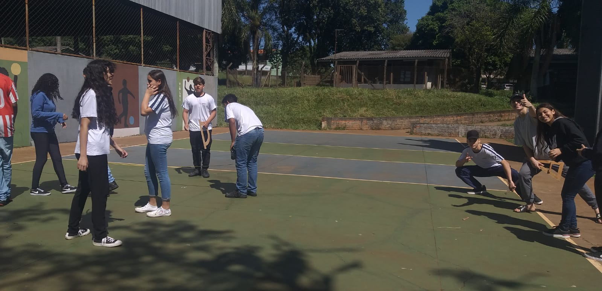
A crescente preocupação com a qualidade de vida envolve a questão ambiental, pois a sociedade, por meio da evolução científica e tecnológica, descobriu que as condições ambientais são importantes para a saúde e para o seu bem-estar, mas temos que aprender a respeitar e preservar nosso próprio espaço, onde moramos, estudamos ou trabalhando, dessa forma teremos maturidade para entender e preservar a natureza de forma global.
Assim torna-se interessante o contato com a terra, as hortas nas escolas possuem um papel importantíssimo nesse relacionamento além de permitir a discussão sobre a importância de uma alimentação saudável e equilibrada. (FETTER E MULLER, 2008).
Com o objetivo de melhorar o ambiente escolar, conscientizar os alunos de sua responsabilidade e cidadania foi proposto um projeto de uma horta, visando a produção de hortaliças, legumes e temperos para enriquecer a merenda bem como a preservação e exploração do nosso de meio ambiente.
Nosso projeto consiste em construir uma horta em forma de mandala, os canteiros terão a forma de triângulo, os caminhos entre um canteiro e outro serão pavimentados com paver, para dar o efeito degrade nos canteiros para lembrar uma mandala, as plantas cultivadas terão cores variadas.
Ainda em cada canteiro será plantado uma planta medicinal para ajudar no controle das pragas bem como criar um caminho sensorial entre os canteiros com a finalidade de desenvolver atividades que exercite o tato e o olfato nos participantes.
A princípio o projeto está sendo desenvolvido com os estudantes do 2º ano B, nas disciplinas de programação, empreendedorismos e biologia, esse projeto será desenvolvido de forma contínua, com acréscimos de novas etapas e mantido por toda comunidade escolar ao longo dos anos.
A primeira etapa foi realizada em sala de aula com construções geométricas na forma de mandala, cálculos de porcentagens, volume, área e perímetro dos polígonos e da circunferência, e ainda visando possibilitar aos alunos condições de ver a beleza e a importância das construções geométricas em diferentes perspectivas, oportunizamos aulas mais dinâmicas e participativas, desmistificando assim a ideia que professor e a própria disciplina de matemática como “bicho papão”.
Para Mora (2000), adolescência é um fenômeno sociocultural que assume características diferentes em cada cultura e em cada momento histórico. Os adolescentes normalmente atravessam desequilíbrios e instabilidades que os levam a recorrer a defesas e condutas às vezes extremas, sendo esta uma etapa de vulnerabilidade. Estes são ávidas por descobrir o mundo e somente quem se mostrar apaixonado na vida conseguirá captar sua atenção. Conclui-se, portanto o quanto se faz necessário que um adulto transmita paixão, necessária para descobrir o mundo, crescer e desenvolver, esse trabalho pode ser um recurso didático que auxilia na compreensão dos conteúdos em geral, visto que no dia a dia observamos que muitos alunos veem na escola um lugar de difícil adaptabilidade, o trabalho de esforço físico pode fazer com que esses se sintam úteis e necessários.
Para Cosenza e Guerra (2011) o conhecimento fornecido pelas neurociências pode indicar algumas direções para o ambiente escolar, sendo este estimulante, de forma que os alunos se sintam reconhecidos.
Vale lembrar que o projeto busca novos recursos para melhoria do ensino aprendizagem bem a relação professor aluno.
Mudança de comportamento e atitude dos alunos por meio de valores que serão transportados para o dia a dia da família e da escola, havendo mais conscientização e prática do que foi aprendido sobre o meio ambiente e sustentabilidade como forma de equilíbrio e compromisso, formando cidadãos conscientes atentos ao momento sensível que estamos passando devido á intensa degradação do meio ambiente.
Diversificação dos ingredientes da merenda da escola, a comunidade escolar será beneficiada pelo projeto, de forma a usufruir do seu próprio esforço e ainda envolvimento da família.
- Preparo do terreno para o desenvolvimento da horta.
- Desenhar a forma geométrica no solo (esboço da horta na forma de mandala) e traçar as linhas.
- Colocação dos paver no chão para delimitar cada canteiro e o acesso da horta.
- Adubação do solo.
- Seleção de cultivares.
- Plantio e manutenção.
- Desenvolvimento e pesquisa em módulos de automação.
PARANÁ. Secretaria de Estado da Educação. Superitendência de Educação. Livro Didático Público do Estado do Paraná: Matemática. Curitiba: SEED/DEPG, 2006.
D’AMBROSIO, U. Educação Matemática: da teoria à prática. Campinas: Papirus, 1997.
LORENZATO. S. Por que não ensinar geometria? Revista da Sociedade Brasileira de Educação Matemática. São Paulo, n. 4, p. 3-12, jan./jun. 1995.
PONTE, J. P.; Brocardo, J. & Oliveira, H. Investigações Matemáticas na Sala de Aula. Belo Horizonte: Autêntica, 2006.
MORA, Estela. Psicopedagogia infanto-adolescente. São Paulo : Cultural,2000.
KUPFER, Maria C., Freud e a Educação – o Mestre do Impossível. 3ª Ed. 2ª impressão, Cromoset Gráfica e Editora, 1997.
KUPFER, M.C.M. Educação para o futuro: psicanálise e educação (1999). 3ed. São Paulo: Escuta, 2007.155p.
WERNECK, Hamilton. Papel da Escola: de carrasco a agente motivador do aprendizado. Revista Bem-estar e Saúde, Londrina - PR, Edição 143, pág. 02, 2012.
FRISK, P. R;Horta na Escola; Publicado, 2008. Disponível em:
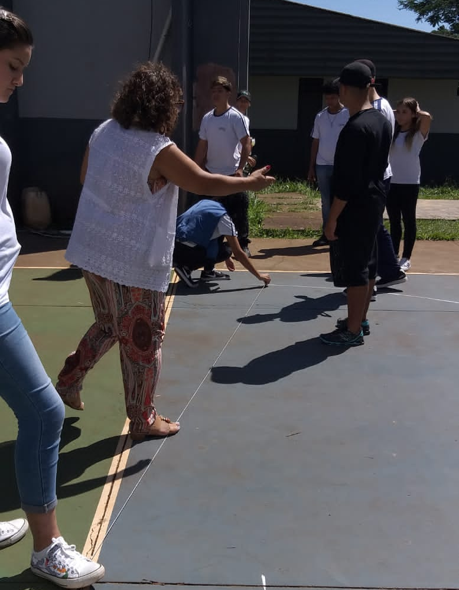
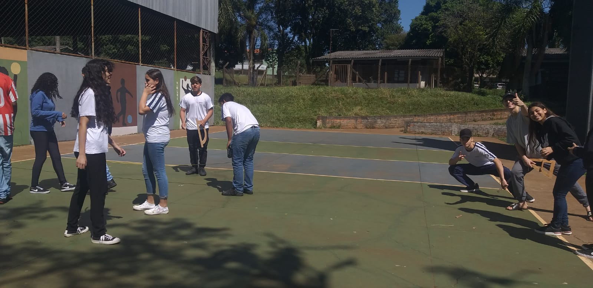